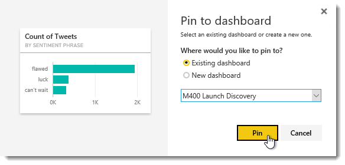

The team decides to review BI reports so they can try to predict sales for the upcoming launch and learn if they need to adjust messaging to improve public perception.
One of Karen's colleagues has shared a new type of BI report with her and exclaimed that it contains some great new visualizations that provide valuable information regarding Marketing efforts at Contoso.
Karen has the file saved in her OneDrive, which is synchronized with all of her devices. On her desktop, she clicks on the Explorer from QuickLaunch menu.
Facilitation Tip: Only the participant playing Karen Berg will have the Marketing Report file in OneDrive. Karen will need to share the file with the team in order for them to follow along.
She clicks on the OneDrive for Business folder in the left navigation pane. First, she wants to make sure her whole team has access to the Marketing reports, so she clicks BI Documents.
Under BI Documents she double-clicks the Marketing Reports.pbix file.
This launches the report into the new Power BI Desktop app that contains four report tabs across the bottom. Karen clicks to Enable custom visuals in the toolbar.
Karen would like to review the visualizations to collect any high-level data related to marketing campaigns, so she will start by hiding the Fields and the Visualizations panes…

as well minimizing the ribbon bar in order to maximize report viewing.
Karen can click through the tabs and clearly see there are some compelling visualizations around marketing campaigns that she would like to further review. She clicks File, then hovers over Publish and clicks Publish to Power BI.
Once published, she clicks Open Marketing Reports.pbix in Power BI.
Karen wants to make sure her team can also view this information, so she decides to share it with them. In order to do so, she navigates back to OneDrive for Business and clicks BI Documents. Next, she clicks Only you under the Marketing Reports.pbix sharing.
She clicks Invite people.
Now, she invites her team and clicks Share.
Now, she will begin sourcing the visualizations related to the M400.
In her Internet browser, she has the newly published Marketing Report open and selects the Website & Social Analytics tab.
She dynamically filters the entire page by clicking on the green positive circle under the Sentiment by product category visualization.
Karen begins building a new dashboard for her M400 Launch Discovery by clicking Pin visual…
then choosing New Dashboard, typing M400 Launch Discovery for the name and clicking Pin.
Facilitation Tip: Only the participant playing Karen Berg will have the Marketing Report file in OneDrive. Karen will need to share the file with the team in order for them to follow along.
Next, Karen clicks Smart Phone Analysis from the Reports list on the left…
which opens an Excel workbook in the browser. This allows her to compare M300 and M400 sales during Presale time periods by clicking Presale under Promotion Type.
The line graph shows the M300 brought in more dollars during presale in 2011…
but the pivot chart below the graph shows more M400 units have been sold in its presale time period. The M400 is at a lower price point, which is why sales dollars are down even though quantity is up slightly.
Contoso had hoped the lower price point would drive more sales, but they have only presold ~6500 more M400s than the M300 sold in 2011. This small increase in sold units has not made up for the drop in price, thus leading to disappointing revenues.
Concerned this will negatively affect sales once the M400 is launched, Karen clears all filters to see how sales for the M300 performed after the presale period.
The blue line in the graph shows a sharp decline in M300 sales after the presale period (November 2011) and sales for the M300 never rebounded to the strong prelaunch sales numbers.
Karen clicks and drags from cell A1 down through cell I33 before releasing her mouse button and then clicks Pin in the upper-right corner.
She continues to pin data points to her M400 Launch Discovery dashboard.
With history showing the highest sales numbers can be expected during the presale and early weeks of a product’s launch, the team is concerned that the M400’s slow presales will result in even lower sales over time.
Next, the team decides to look into tweet sentiment for the M400 see if social media can provide insight into why the M400 is not performing well and help guide their action plan to course correct for the launch.
Karen clicks on the Smart Phone Social Sentiment dashboard. In the Ask a question… box, she types show sentiment phrase and number of m400 tweets.
She sees there are a few phrases that are positive and can easily scan the list of phrases that are negative.
She pins the graph to her M400 Launch Discovery dashboard.

Wanting to review the change in sentiment over the presale period, she types Show average tweet sentiment value as a line chart during presale by month for M400.
She pins this to her M400 Launch Discovery dashboard.
Then, she wants to look at the volume of tweets during the presale period, so she types Show number of M400 tweets as a line chart during presale by month.
She also pins this to her M400 Launch Discovery dashboard.
The first line graph shows sentiment for the M400 experienced a sharp decline over the presale period, while the graph for the number of tweets regarding M400 shows an increase in tweet volume in recent months. It is obvious that they have their work cut out for them to reverse customer's perception of the M400 phone.
To learn more about where the negative sentiment values are coming from, Karen types Show number of negative M400 tweets in only the United States by state and zooms in to view details about tweet activity in the U.S.
She is able to see a large concentration of negative tweet activity in the northeast region of the United States and can zoom in and hover over the circles in each state to see the number of negative tweets in that state.
She pins this to her M400 Launch Discovery dashboard.
In her review of the various Power BI reports so far, they are beginning to suspect marketing messages may not be effectively communicating to users why they should upgrade to the M400; the lower sentiment ratings demonstrate that consumers may think the discounted price means fewer features and an inferior product.
Next, the team decides further dig in to where the negative sentiment is located in the U.S. so they can choose where to focus marketing efforts. They can use Power View and 3D Maps to visually compare tweet activity and sentiment in the U.S.
In the Reports menu, Karen clicks on the ellipsis next to the M400 Power Map for Smart Phone Twitter report and chooses Edit.
She then clicks on Open in Excel to open the file in Excel 2016.
She clicks the Edit Workbook and Enable Content buttons…
and Yes because it is a trusted document.
She clicks on the Insert tab in the ribbon. Next, she clicks on the down arrow on the 3D map button, clicks Open 3D Maps and clicks Enable for the Data Analysis add-ins, if prompted.
Next, she clicks Open for the Northeast M400 Presales tour, then clicks Play Tour in the upper-left corner of the Home menu ribbon.
She includes her team who would like to review these dashboards at a later date and clicks Share.
The team compares heat maps of tweet activity with bar graphs showing tweet sentiment in the U.S. Northeast during presale timeframe for the M400. They can zoom and pan to view different parts of the U.S. and from this they can easily see the M400 sentiment is significantly lower in East Coast states.
After playback of the 3D map, Karen and the team agree that this visualization also belongs in the M400 Launch Discovery dashboard. She closes both Power Map and Excel 2016 and clicks back to the browser tab for Power BI.
She clicks and drags around the A1 cell and drag down to N29 cell, before pinning the report to her M400 Launch Discovery dashboard one last time.
With the negative tweet sentiment outnumbering the positive sentiments, they are convinced that marketing messages are not effectively communicating to users why they should upgrade to the M400; the sentiment shows that many think the discounted price means fewer features and an inferior product.
The team decides they will need to adjust the current marketing messages to combat misinformation online, reverse negative social sentiment and better demonstrate to users the benefits of the M400.
Karen quickly reviews the M400 Launch Discovery dashboard that the team has created and then clicks to Share in the top-right corner.